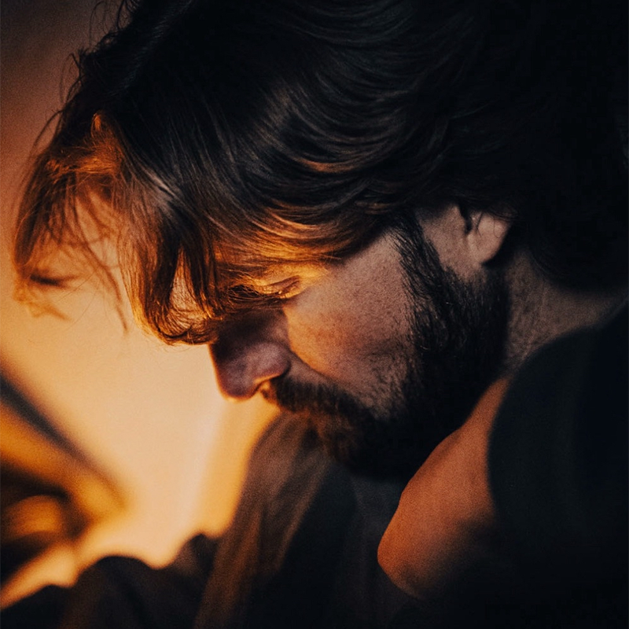
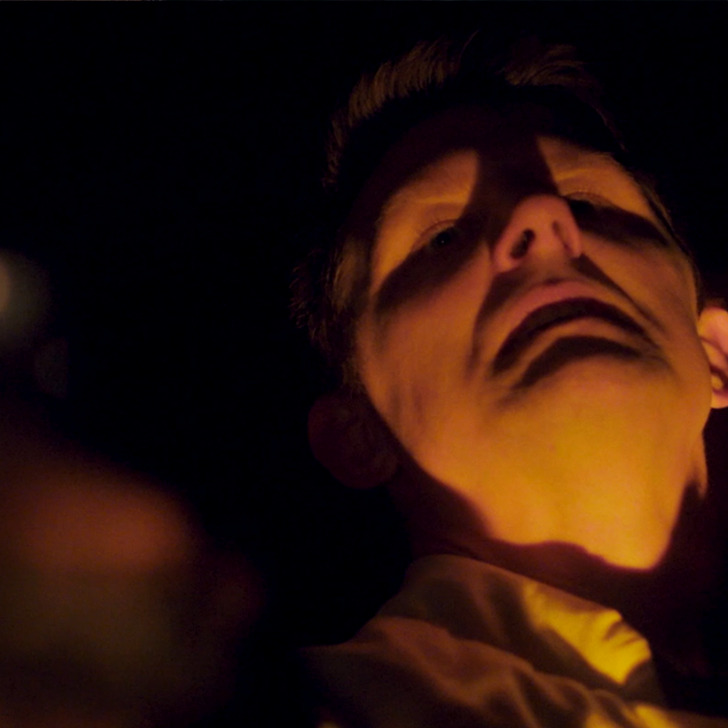
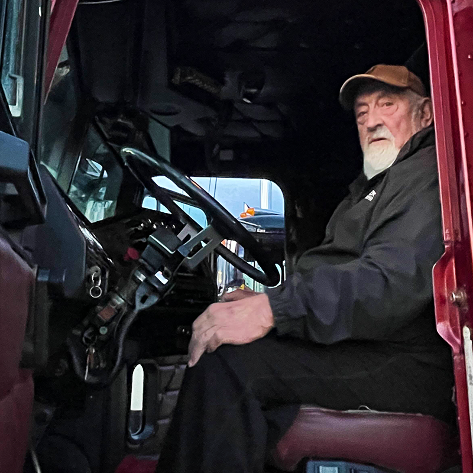

A showcase of my audio post-production and screenwriting work across multiple short film projects at Sheridan College and beyond.
I am a fourth-year Honours BFTV graduate from Sheridan College specializing in audio post-production and screenwriting. My work spans the full post-production sound pipeline: dialogue editing, sound design, foley, ADR, and 5.1 mixing in Pro Tools.
I completed an assistant sound editorial internship at PurpleDOG Post Production, where I gained professional experience in session conforming, SFX and foley spotting, and ADR coordination. Whether I'm building a soundscape from scratch or refining dialogue for a final mix, I bring the same focus: deliver polished work ahead of schedule and leave room for creative collaboration with the director.
As a screenwriter, I approach stories with the same attention to craft and revision, having taken "O, Death" through eight drafts from concept to shooting script. I'm currently seeking audio post-production opportunities in the Greater Toronto Area.

Wrote the screenplay from the director's story concept across 8 drafts. Handled full sound editorial, foley recording, ADR, and delivered a 5.1 and stereo mix at -24 LUFS.

Recorded location sound on set across 3 shoot days using a Sound Devices MixPre-10 and Sennheiser G3 lavaliers. Handled sound editorial and prepared the session for the final mix.

Edited dialogue, produced foley and post-SFX, and mixed audio in Pro Tools. Delivered multiple drafts ahead of deadline, refining the mix through several rounds of director notes.
"Thomas is a resourceful, timely, and passionate audio engineer. He followed directions very well, came up with his own suggestions for what he thinks would work even better, and he handed in revisions on time. Highly reccomend working with him and his abilities"
"Thomas completes the tasks assigned to him days before deadlines and never misses a beat when it comes to replying to feedback. Genuinenly the most reliable teammate I have ever worked with, and I couldn't reccomend him enough."
"Thomas is an extremely hard working person that is always willing to take a leadership role in collaborative efforts. I’ve had the pleasure of working with Thomas on multiple projects and he has never failed to deliver quality work that is beyond expectations. Thomas is multi-talented in several areas of filmmaking and any project would be lucky to have his contribution."
"I’ve had the pleasure of working with Thomas on multiple projects now and I can safely say he is someone I would choose for my team every time. He’s extremely hard working and reliable, and has a positive attitude, alleviating the tension and bringing a positivity to any set he’s a part of."
"Thomas's attention to detail is impeccable. It's one thing to produce a great sound design, it's another to be able to hear the imperfections and make them perfect."
"Thomas is an imaginative, talented writer who displays the necessary commitment and work ethic necessary to continue developing his already considerable screenwriting skills. I look forward to seeing what he does in the future."
"Thomas is a resourceful, timely, and passionate audio engineer. He followed directions very well, came up with his own suggestions for what he thinks would work even better, and he handed in revisions on time. Highly reccomend working with him and his abilities"
"Thomas completes the tasks assigned to him days before deadlines and never misses a beat when it comes to replying to feedback. Genuinenly the most reliable teammate I have ever worked with, and I couldn't reccomend him enough."
"Thomas is an extremely hard working person that is always willing to take a leadership role in collaborative efforts. I’ve had the pleasure of working with Thomas on multiple projects and he has never failed to deliver quality work that is beyond expectations. Thomas is multi-talented in several areas of filmmaking and any project would be lucky to have his contribution."
"I’ve had the pleasure of working with Thomas on multiple projects now and I can safely say he is someone I would choose for my team every time. He’s extremely hard working and reliable, and has a positive attitude, alleviating the tension and bringing a positivity to any set he’s a part of."
"Thomas's attention to detail is impeccable. It's one thing to produce a great sound design, it's another to be able to hear the imperfections and make them perfect."
"Thomas is an imaginative, talented writer who displays the necessary commitment and work ethic necessary to continue developing his already considerable screenwriting skills. I look forward to seeing what he does in the future."
Audio Post-Production & Screenwriting Resume
Interested in working together? I'd love to hear from you. My email and phone number are provided in my resume.